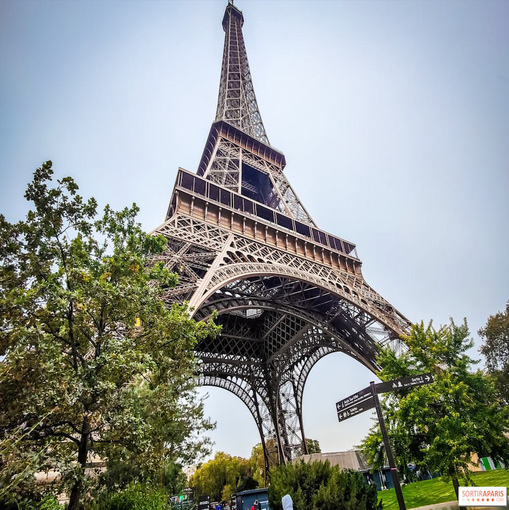
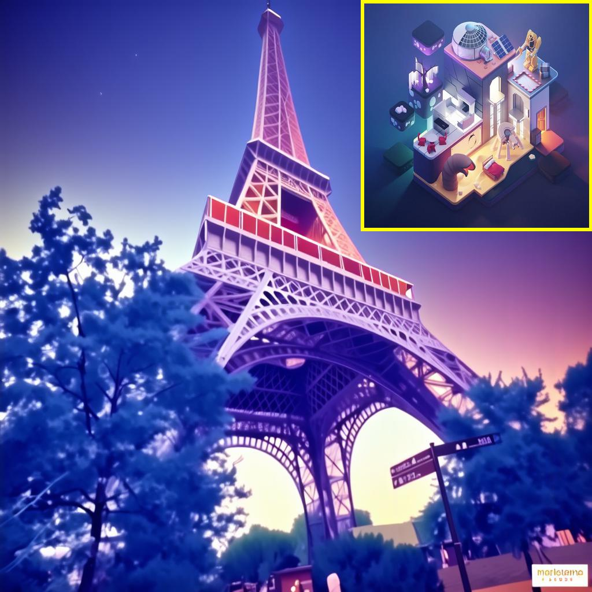
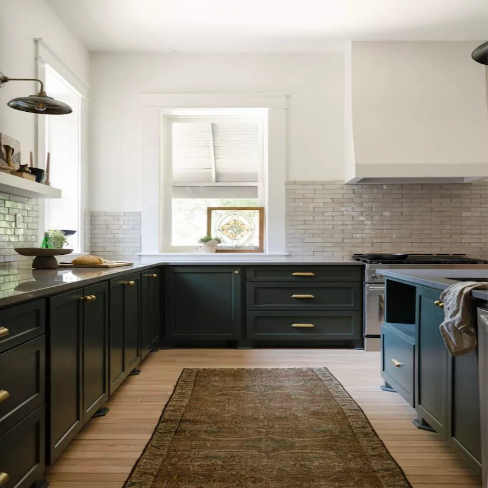
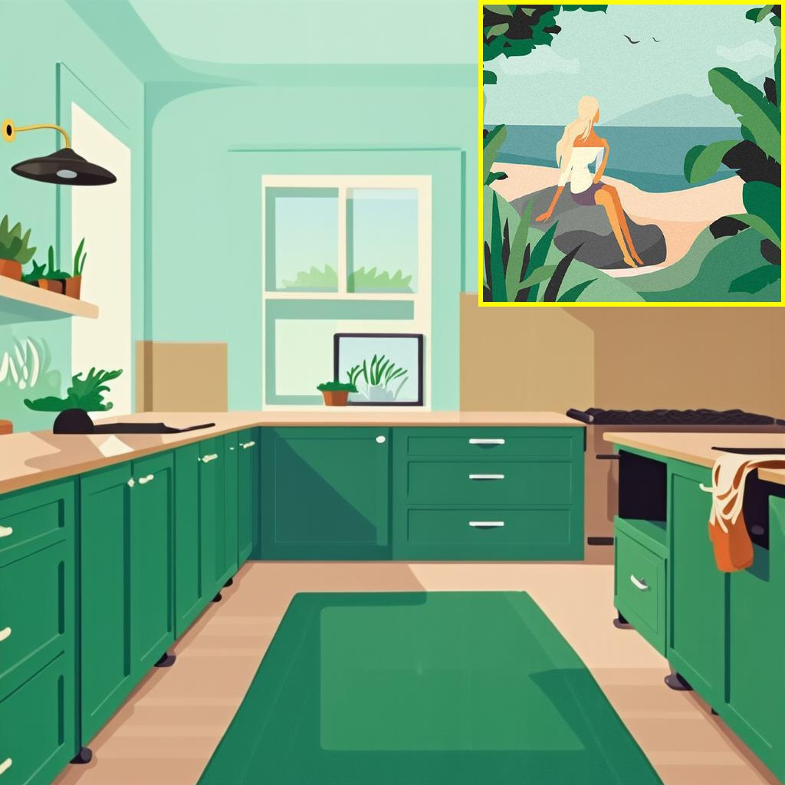
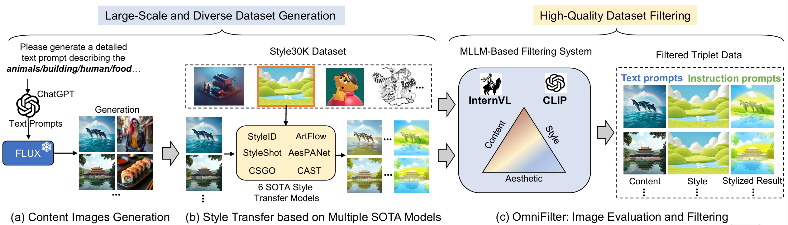
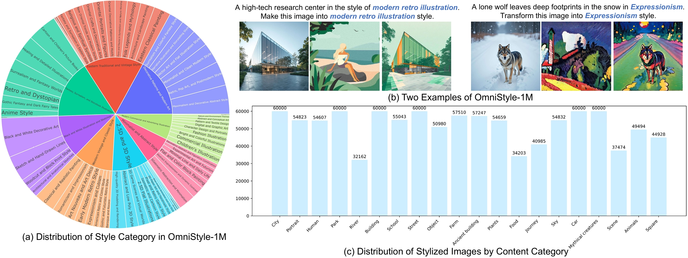
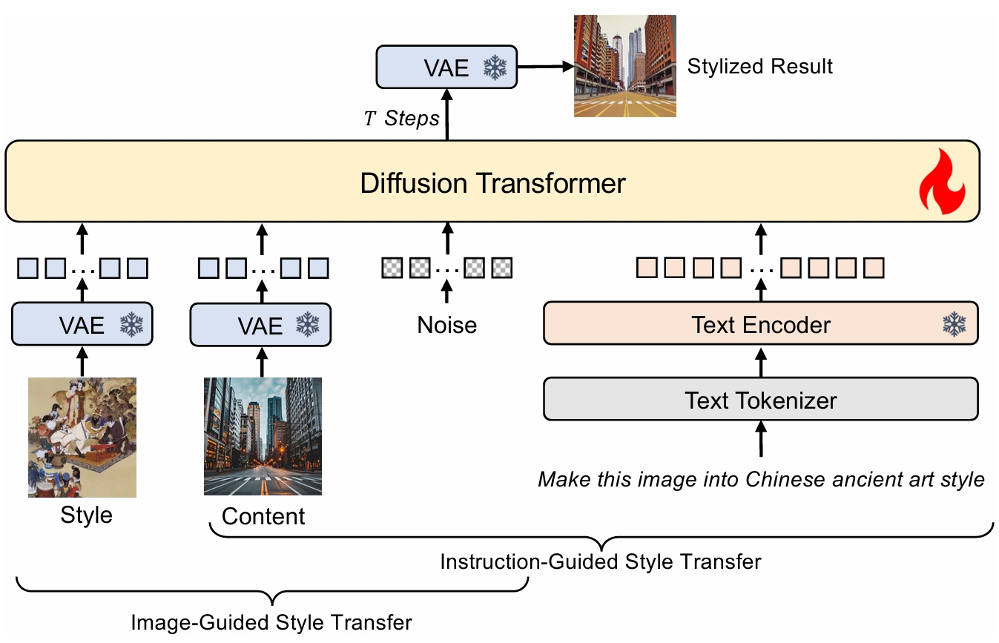
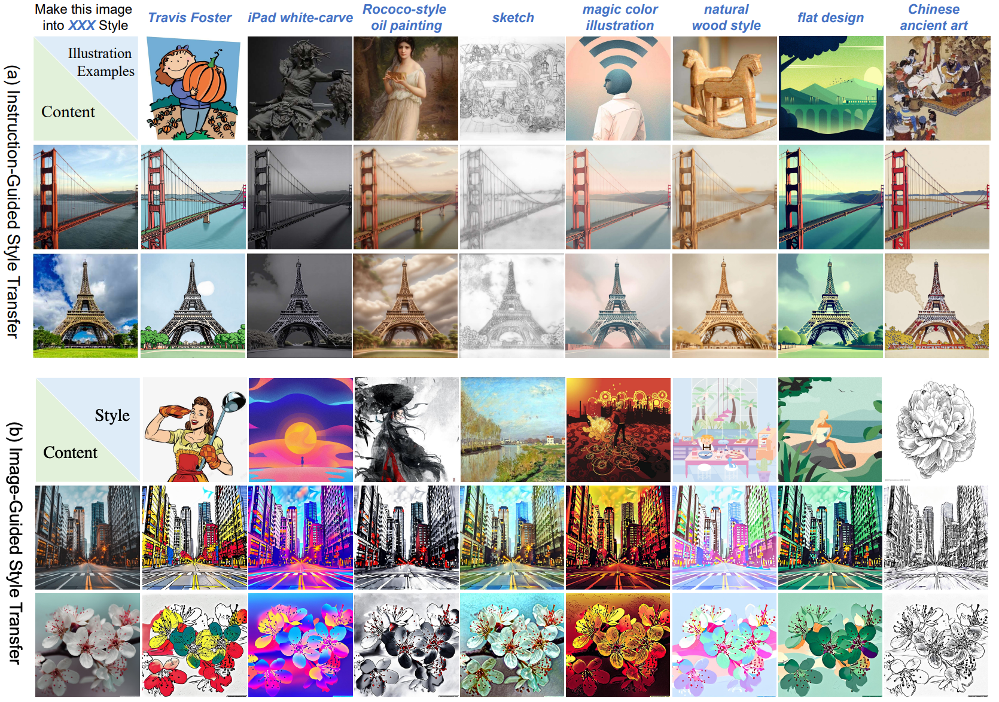

Overview
OmniStyle is an end-to-end style transfer framework based on a Diffusion Transformer (DiT), targeting high-quality 1K stylization with both instruction-guided and reference-guided settings.
OmniStyle-1M is a million-scale triplet dataset (content, style, stylized image) spanning 1,000 style categories. OmniStyle-150K is its high-quality filtered subset for training.

Diverse Stylization Results






Method

Dataset

OmniStyle Model

More Results

Acknowledgements
This work was supported in part by the National Natural Science Foundation of China (No. 62202199, 62406134), the Suzhou Key Technologies Project (No. SYG2024136), and the Fundamental Research Funds for the Central Universities.